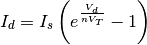
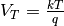
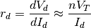

2.3.2.1. Diode Characteristic Curve¶
This example shows how to simulate and plot the characteristic curve of a diode.
# -*- coding: utf-8 -*-
import os
import numpy as np
from matplotlib import pylab
import matplotlib.ticker as ticker
import PySpice.Logging.Logging as Logging
logger = Logging.setup_logging()
from PySpice.Spice.Netlist import Circuit
from PySpice.Spice.Library import SpiceLibrary
from PySpice.Unit.Units import *
from PySpice.Physics.SemiConductor import ShockleyDiode
libraries_path = os.path.join(os.environ['PySpice_examples_path'], 'libraries')
spice_library = SpiceLibrary(libraries_path)
For this purpose, we use the common high-speed diode 1N4148. The diode is driven by a variable voltage source through a limiting current resistance. And We will simulate the circuit at these temperatures: 0, 25 and 100 °C.

circuit = Circuit('Diode Characteristic Curve')
circuit.include(spice_library['1N4148'])
circuit.V('input', 'in', circuit.gnd, '10V')
circuit.R(1, 'in', 'out', 1) # not required for simulation
circuit.X('D1', '1N4148', 'out', circuit.gnd)
temperatures = [0, 25, 100]
analyses = {}
for temperature in temperatures:
simulator = circuit.simulator(temperature=temperature, nominal_temperature=temperature)
analysis = simulator.dc(Vinput=slice(-2, 5, .01))
analyses[temperature] = analysis
# Fixme: i(vinput) -> analysis.vinput
We plot the characteristic curve and compare them to the Shockley diode model:

where 
In order to scale the reverse biased region, we have to do some hack with Matplotlib.
silicon_forward_voltage_threshold = .7
shockley_diode = ShockleyDiode(Is=4e-9, degree=25)
def two_scales_tick_formatter(value, position):
if value >= 0:
return '{} mA'.format(value)
else:
return '{} nA'.format(value/100)
formatter = ticker.FuncFormatter(two_scales_tick_formatter)
figure = pylab.figure(1, (20, 10))
axe = pylab.subplot(121)
axe.set_title('1N4148 Characteristic Curve ')
axe.set_xlabel('Voltage [V]')
axe.set_ylabel('Current')
axe.grid()
axe.set_xlim(-2, 2)
axe.axvspan(-2, 0, facecolor='green', alpha=.2)
axe.axvspan(0, silicon_forward_voltage_threshold, facecolor='blue', alpha=.1)
axe.axvspan(silicon_forward_voltage_threshold, 2, facecolor='blue', alpha=.2)
axe.set_ylim(-500, 750) # Fixme: round
axe.yaxis.set_major_formatter(formatter)
Vd = analyses[25].out
# compute scale for reverse and forward region
forward_region = Vd >= 0
reverse_region = np.invert(forward_region)
scale = reverse_region*1e11 + forward_region*1e3
for temperature in temperatures:
analysis = analyses[temperature]
axe.plot(Vd, - analysis.vinput * scale)
axe.plot(Vd, shockley_diode.I(Vd) * scale, 'black')
axe.legend([u'@ {} °C'.format(temperature)
for temperature in temperatures] + ['Shockley Diode Model Is = 4 nA'],
loc=(.02,.8))
axe.axvline(x=0, color='black')
axe.axhline(y=0, color='black')
axe.axvline(x=silicon_forward_voltage_threshold, color='red')
axe.text(-1, -100, 'Reverse Biased Region', ha='center', va='center')
axe.text( 1, -100, 'Forward Biased Region', ha='center', va='center')
Now we compute and plot the static and dynamic resistance.


axe = pylab.subplot(122)
axe.set_title(u'Resistance @ 25 °C')
axe.grid()
axe.set_xlim(-2, 3)
axe.axvspan(-2, 0, facecolor='green', alpha=.2)
axe.axvspan(0, silicon_forward_voltage_threshold, facecolor='blue', alpha=.1)
axe.axvspan(silicon_forward_voltage_threshold, 3, facecolor='blue', alpha=.2)
analysis = analyses[25]
static_resistance = -analysis.out / analysis.vinput
dynamic_resistance = np.diff(-analysis.out) / np.diff(analysis.vinput)
axe.semilogy(analysis.out, static_resistance, basey=10)
axe.semilogy(analysis.out[10:-1], dynamic_resistance[10:], basey=10)
axe.axvline(x=0, color='black')
axe.axvline(x=silicon_forward_voltage_threshold, color='red')
axe.axhline(y=1, color='red')
axe.text(-1.5, 1.1, u'R limitation = 1 Ω', color='red')
axe.legend([u'{} Resistance'.format(x) for x in 'Static', 'Dynamic'], loc=(.05,.2))
axe.set_xlabel('Voltage [V]')
axe.set_ylabel(u'Resistance [Ω]')
pylab.tight_layout()
pylab.show()

We observe the forward voltage threshold increase with the temperature.